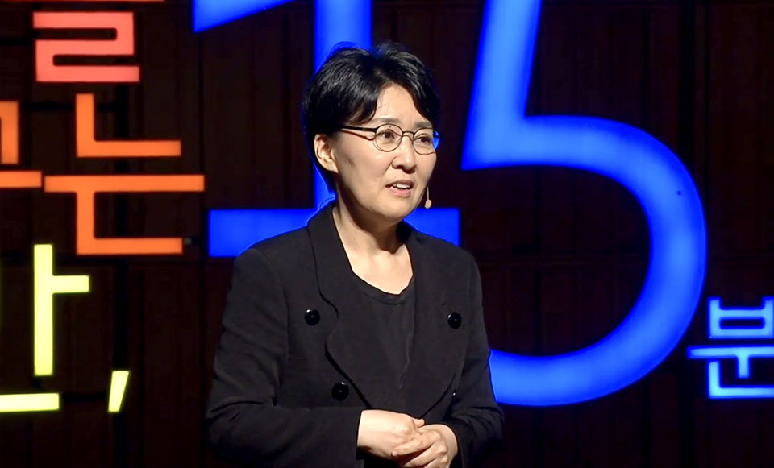
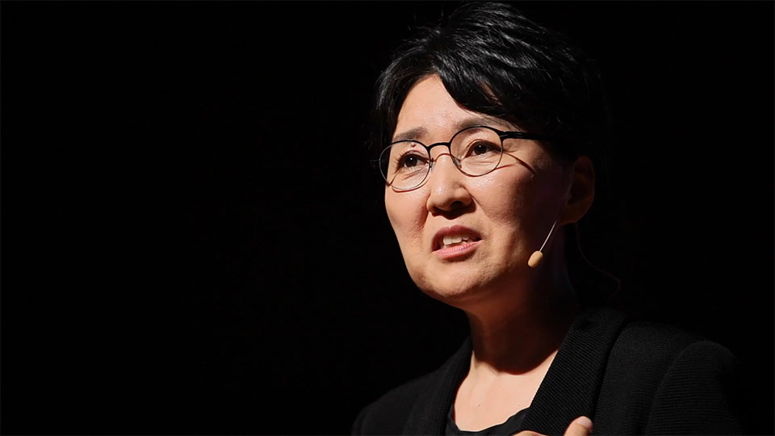
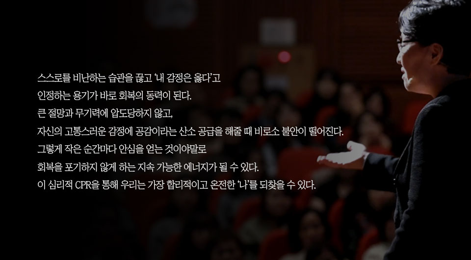

글. 편집실
출처. 세상을 바꾸는 시간, 나머지 45분
심리적 CPR: 마음을 살리는 응급 처치 매뉴얼
정혜신 정신건강의학과 전문의는 지금이야말로 누구나 사람을 구할 수 있는
‘심리적 CPR 매뉴얼’이 절실한 시대라고 말한다. 고문을 당하거나 참혹한
일을 겪은 사람은 쓰러진 소가 낙지를 먹고 일어나는 것처럼 특정한 힘의
요체가 있어야만 다시 살아날 수 있다. 그녀는 30년간의 치유 경험을 통해
그 힘의 요체가 바로 공감임을 확신한다. 이 절박한 통찰은 깊이 있는
이론을 넘어, 우리 일상에서 갈등과 상처로 마음이 죽어가는 것을 막고
생생하게 살아나게 할 수 있는 구체적인 기술을 알려준다. 우리는 어떻게
이 심리적 CPR을 익혀 스스로와 사랑하는 사람들을 구할 수 있을까.

“당신이 옳다”는 말은 정반대의 의견을 가진 사람이 모두 옳다는 값싼
위로가 아니다. 이 말의 본뜻은 “사람이 어떤 마음을 먹더라도 이유가 있을
것이다”라는 깊은 인정이다. 팀장에게 억울한 일을 당해 집에 가면서 ‘저
사람이 교통사고 났으면 좋겠다’라는 해코지하는 마음이 들더라도, 그것은
괴물이 되어 가는 것이 아니라, 이유가 있는 고통이라는 것이다. 이를
괴물이나 망가짐으로 평가하기 전에, 그 마음이 들었으면 ‘이유가 있을
것이다’라고 물어봐 주어야 한다.
공감은 단순히 “참고 들어주는 것”이 아니다. 참고 견디는 것은 ‘감정
노동’일 뿐이며, 반드시 바닥이 드러나 폭발하게 되어 결국 관계를 망친다.
진짜 공감은 모르는 것을 짐작하지 않고 물어보는 데서 시작된다. 배우자가
갑자기 회사를 그만두고 싶다고 할 때, 이해가 안 되면 화를 내거나 참지
말고 “왜? 요즘 마음이 어떤데?”라고 물어보기 시작해야 한다. 모르는 것을
공감할 수 없기에, 물어봐야 그 사람의 마음을 납득하고 편안해질 수 있다.
정혜신 전문의는 해고된 이후 사람들이 “왜 죽어가는지” 납득하지 못하는
사람들의 시선에 대해 이야기한다. 단순히 ‘다른 직장을 찾으면 되지 왜
죽는가’라고 생각하는 사람들에게, 그녀는 그들이 ‘돈을 못 벌어서’가
아니라 ‘너무 억울해서’ 못 견디고 있다는 심정을 물어봐야 한다고
조언한다.
억울함의 무게는 일상생활을 할 수 없을 만큼 무겁다. 도박으로 인해 모든
것을 잃은 사람이 느끼는 극한의 자책감과 상실감 역시, 외부에서 보기에는
‘자업자득’일지라도 당사자에게는 ‘이유가 있는 고통’이다. 이렇게 감정의
표면이 아닌 속마음을 물어봐 주어야 그 사람의 억울함과 고통을 이해할 수
있으며, 이 이해가 바로 치유의 문을 여는 열쇠가 된다.
정혜신 전문의는 이러한 무조건적인 지지가 아이를 더 엉뚱한 길로
인도하지 않을까 하는 염려에 대해 단호하게 말한다. “사람은 그런 존재가
아니에요.” 사람은 누군가에게 비난 없이 자기 존재를 그대로 인정받았을
때 자기 불안이 떨어지고 안심하게 된다.
안심하게 된 사람은 그때부터 가장 합리적이고 객관적으로 변한다. 즉,
도박중독의 회복 과정에서도, 불안과 자책에 빠져 있을 때 자꾸 자기
부정을 하기보다 ‘지금 내가 힘들고 괴로운 마음은 그럴만한 이유가
있다’라고 인정해 줄 때, 비로소 어떻게 해야 할지 명징하게 알게 된다.
공감은 이처럼 듣는 사람의 분노와 짜증도 줄여주어, 합리적인 대화가
가능하게 하는 쌍방의 치유 과정이다.

회복자들에게 찾아오는 ‘도박 충동’, ‘무기력’, ‘자살 충동’과 같은
극단적인 감정도 마찬가지다. 그녀는 “누군가 ‘저 너무 죽고 싶어요’라고
해도 ‘네가 옳다’고 해줄 수 있나요?”라는 질문에 “그럼요,
그렇고말고요”라고 답한다.
“당신이 지금 죽고 싶을 만큼 무기력했구나”, “누구를 죽여버리고 싶을
만큼 억울하구나”라고 그 감정 아래 깔린 고통을 인정해 주어야 한다.
이렇게 나의 힘든 마음을 비난하거나 부정하지 않고 있는 그대로 받아들일
때, 비로소 라디오 주파수가 맞듯이 잡음이 사라지고 심리적인 기반이 다시
만들어진다. 이때 사람은 뜻밖의 위로를 받고, ‘다시 살아봐야겠다’라는
마음을 갖게 된다.
이러한 공감은 타인에게만 필요한 것이 아니다. “내 고통, 내 힘든 마음을 비난하지 않고 부정하지 않고 그대로 인정해 주는 것”이 바로 나를 살리는 심리적인 기반을 만든다. 나도 온전히 내 편이 되어주기가 가장 어렵다는 강연자의 말처럼, 스스로를 비난하는 습관을 끊고 ‘내 감정은 옳다’고 인정하는 것은 용기가 필요한 일이다. 전문가 자격증이 없어도, 온 체중을 실어 사람 마음에 망설임 없이 ‘당신은 옳다’ 할 수 있는 사람이 치유자이며, 그런 사람은 사람 목숨을 살린다. 당신도 옳고, 내 옆에 있는 사람도 옳다는 그 마음 하나로 오늘부터 스스로 치유자가 되어보자.
